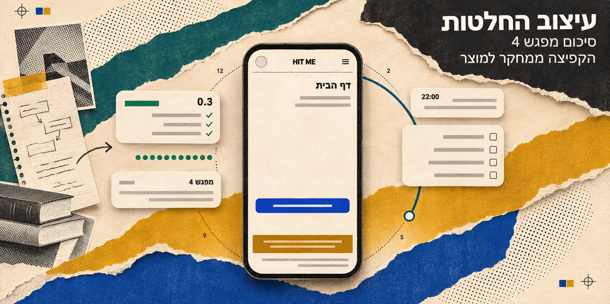
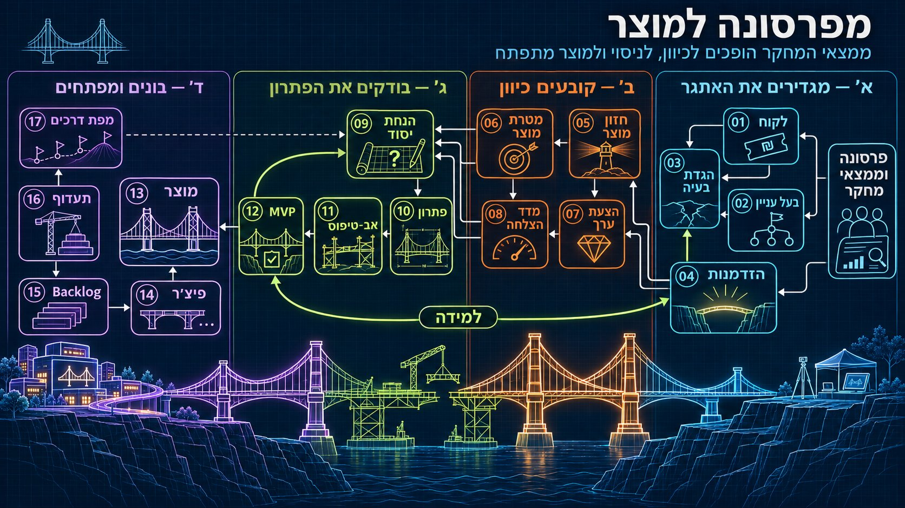
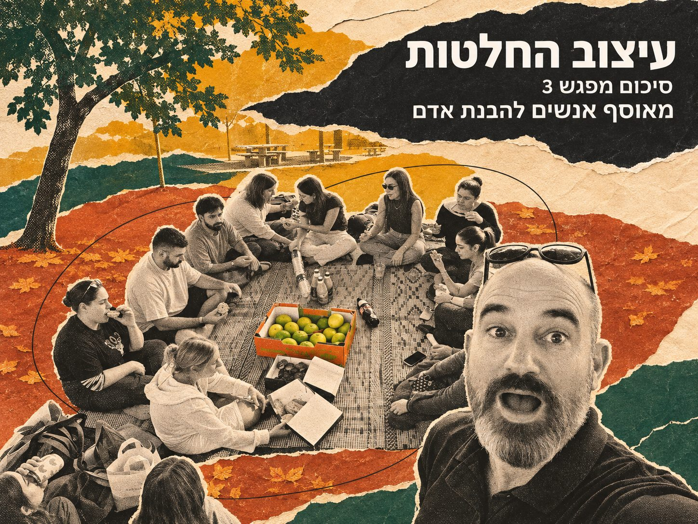
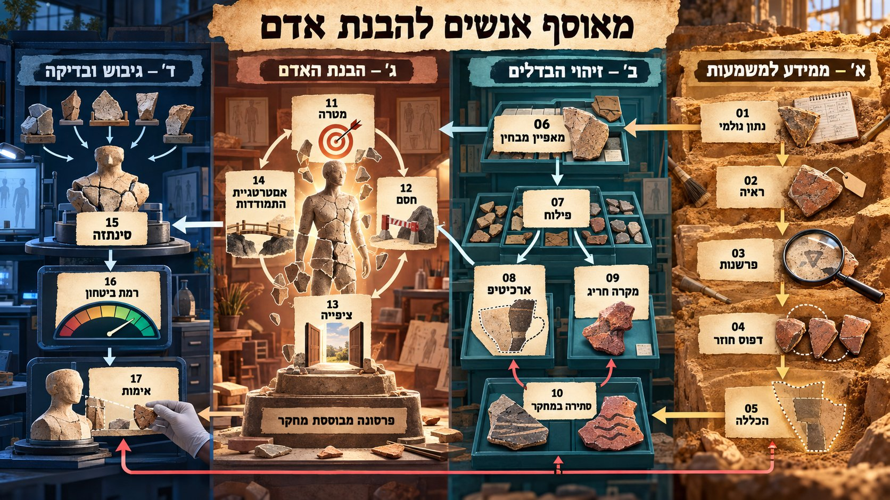
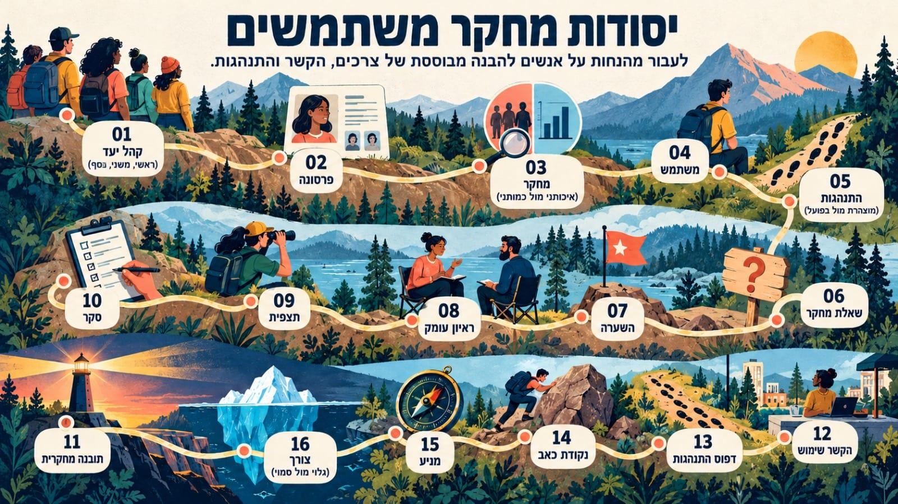
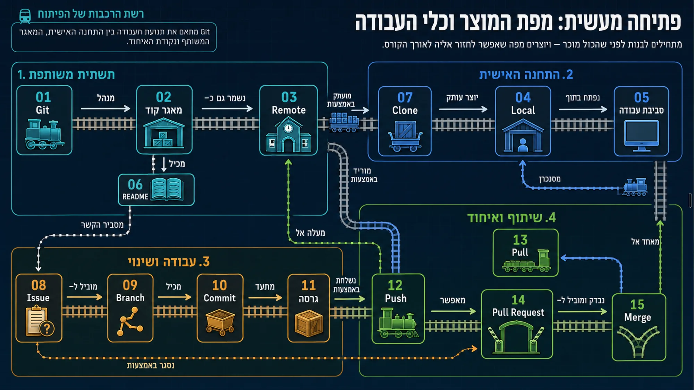

17 סטודנטים, 17 מקצועות, מוצר אחד. כל סטודנט אחראי על מקצוע אחד. בנוסף, כל סטודנט שייך לשני מבנים: גילדה וחוליה.
מקצועארבעה מהמקצועות הם בעלי פיצ׳ר, שלוקחים צורך מהמחקר ומובילים. שלושה עשר הם מקצועות רוחביים, כמו מיתוג, מדידה, נגישות ודף הבית, שעוברים דרך כל הפיצ׳רים.
גילדהמקצועות משלימים ששומרים על שכבה אחת במוצר. הגילדה קובעת כללים, דואגת לעקביות ונותנת ביקורת מקצועית. אין לה מוביל, והיא לא מעכבת עבודה על פיצ׳רים.
חוליהצוות מוצר סביב פיצ׳ר אחד. בעל הפיצ׳ר מוביל אותה, ובונה סביבו שלושה או ארבעה מקצועות רוחביים שהוא הכי צריך.
חמש הגילדות
הפיצ׳ריםשהפיצ׳רים נשענים על המחקר, לא חופפים ומתחברים למוצר אחד. ארבעת בעלי הפיצ׳רים: מילואים, הכוונה, תעסוקה וקורסים.
חוליית פיצ׳ר תעסוקהעם מחקר משתמשים ושמישות; דף הבית ומערכת ההתראות; ומערכת עיצוב.
חוליית פיצ׳ר קורסיםעם שפה חזותית ומילולית; זהות וניהול משתמשים; וניהול, תמיכה ובקרת איכות.
בדף הזה אין שמות של סטודנטים, רק מקצועות.
המפגשים
המפגש האחרון למעלה.
מפגש 4 · 11.11
הקפיצה: מחקר למוצר, וכל אחד לוקח מקצוע

סיכום מפגש 4: הקפיצה ממחקר למוצר.
סגירת סבב המחקר. החוליות הביאו סבב שני של סקרים, ראיונות ומחקר ברשת, והכיתה סידרה יחד את הצרכים שעלו כדי לבחור על אילו מהם האפליקציה מתמקדת.
מפת מושגים חדשה, מפרסונה למוצר: הגדרת בעיה, הנחת יסוד והשערה, פתרון, אב טיפוס ומוצר ראשון שעובד.
המעבר מחקר לעיצוב: 17 מקצועות במוצר אחד (ארבעה מהם בעלי פיצ׳ר). כל סטודנט בוחר מקצוע ואחראי עליו. בעלי הפיצ׳רים מובילים חוליות, והגילדות, קבוצות של מקצועות משלימים, שומרות על שכבה אחת לאורך כל המוצר.
הצגת הסטודיו של HIT ME לכיתה: הכלי שבו רואים מה כל אחד צריך לעשות, מי הגיש מה, ואיך מתקבלות החלטות. מעכשיו הוא מוקרן בכל מפגש.
אורח בזום: מעצב מוצר עם ניסיון של שנים בסטודיו, בסטארט־אפים ובחברות גדולות. דיבר על השינוי במקצוע עם הבינה המלאכותית, על מה בודקים בראיון עבודה, ועל איך הוא עצמו עובד היום עם כלי בינה מלאכותית.
20 הדקות האחרונות הוקדשו להסבר שיעורי הבית, כמו שהתחייבתי אחרי מפגש 3.

מפת המושגים של מפגש 4: מפרסונה למוצר.
17 המושגים במפה: לקוח, בעל עניין, הגדרת בעיה, הזדמנות, חזון מוצר, מטרת מוצר, הצעת ערך, מדד הצלחה, הנחת יסוד, פתרון, אב־טיפוס, MVP, מוצר, פיצ׳ר, Backlog, תעדוף ומפת דרכים.
הסרטון והמצגת
סרטון החשיפה של הסטודיו, 94 שניות, באנגלית. הנתונים בו דוגמה, ושמות המשתמשים טושטשו.
משוב הסטודנטים(5 מתוך 17 ענו, ממוצע מתוך 5. מעט תשובות, לכן זו תמונה חלקית)
הרגישו בנוח לשאול ולהביע דעה: 4.6
הפעילויות עזרו ללמוד באופן פעיל: 3.8
הרעיונות המרכזיים היו ברורים: 3.2
הקצב התאים: 3.2
ברור מה עושים עד המפגש הבא: 2.4
בשלושת המפגשים הקודמים הציונים בשאלה "ברור מה עושים עד המפגש הבא" היו גבוהים יותר, ובמפגש הזה היא הנמוכה ביותר. מה שהסטודנטים כתבו: החלוקה לגילדות ולחוליות עוד לא ברורה, הקצב מהיר, ומה לעשות לפי המקצוע שנבחר. מה עבד: המשחק בפתיחה לחזרה על החומר, וחלוקת העבודה בשיעורי הבית.
שיעורי בית עד מפגש 5: לומדים לעומק את המקצוע שנבחר בכיתה ומגישים ביניים ביום ראשון (מה המקצוע, מה תמונת הניצחון, מה האתגרים, מה למדתי), ואז ביום שלישי 3 עד 5 סקיצות ותחילת עבודה, שמוצגות מהקבצים במאגר. הכניסה לסטודיו ויומן העיצוב נשארים. סקיצות, לא תוצר סופי.
מפגש 3 · 4.11
מעבודה לבד לעבודה בצוות, וממחקר רחב למיקוד

מפגש 3 על הדשא: השיחה על עבודה בצוות.
שיחה פתוחה על הדשא על איך החוליות עובדות יחד. הכיתה ניסחה בעצמה כללי עבודה, ולא קיבלה אותם מלמעלה.
מפת מושגים חדשה: 17 מושגים שעוזרים לעבור מאוסף של ממצאים להבנה של האדם שמאחוריהם.
כל חוליה הציגה איך חקרה ומה מצאה, והחוליות למדו זו מהשיטות של זו.
חצי שעה בסוף המפגש להבהרת שיעורי הבית, ושאלות אישיות למי שצריך.

מפת המושגים של מפגש 3: מאוסף אנשים להבנת אדם.
כללי העבודה שהכיתה הסכימה עליהם
לכל חוליה מוביל מתנדב, שנקבע כל שבוע עוד בכיתה.
פגישת פתיחה בתוך 24 שעות: מי עושה מה, מתי, ומה כל אחד מגיש. יעדי ביניים ליום ראשון וליום שלישי.
עדכון קצר כל בוקר בכתב: מה עשיתי, מה אעשה היום. בלי ישיבות רק בשביל דיווח.
מי שנתקע מרים טלפון באותו יום, ולא מחכה בשרשור הודעות.
משוב מחברי החוליה הוא חלק מהעבודה, לא משהו שקורה בסוף.
המיקוד של המחקר מעכשיו
סטודנטים לתואר ראשון מכל הפקולטות, עם דגש על שנה א׳ ועל סטודנטים שמשרתים במילואים.
שני תחומים: איך סטודנטים מוצאים ומשתמשים בשירותים של המכון, ואיך הם מגיעים למכון וחוזרים ממנו.
תובנה ראשונה מהמחקר: יש פער בין השירותים שהמכון נותן לבין מה שסטודנטים מכירים ומשתמשים בו. זו עדיין השערה שבודקים, לא מסקנה.
שיעורי בית עד מפגש 4: כל חוליה ממשיכה בשיטת המחקר שלה (סקר, ראיונות, תצפיות, מחקר ברשת), אבל כולן על אותו מיקוד. כל חוליה מגישה תוצר משלה, ואת התמונה המשותפת בונים יחד בכיתה.
מפגש 2 · 28.10
מחקר משתמשים
המטרה: לעבור מ״נראה לי שסטודנטים...״ להבנה שמבוססת על ראיות.
למידה משותפת של 16 מושגי מחקר. כל סטודנט הכין ויזואל למושג אחד מראש.
תרגול מחקר על הכיתה עצמה: חצי מילאו סקר, חצי השתתפו בראיון קבוצתי, ואז התחלפו. בסוף סינתזה בעזרת בינה מלאכותית.
ראיון חי בזום עם בוגרת המחלקה, היום מעצבת מוצר בחברת הייטק.
חלוקה לארבע חוליות מחקר לשבוע הקרוב: תצפיות, ראיונות, סקר, ומחקר ברשת.

מפת מושגי המחקר שהכיתה למדה יחד.
מה גילינו על הכיתה(סקר בכיתה, 12 מתוך 17 ענו, בלי שמות)
11 מתוך 12 משתמשים בבינה מלאכותית כל יום. כל ה־12 יוצאים לפעמים מבולבלים מהעבודה איתה.
7 מתוך 12 עוד לא עשו אף ראיון או תצפית עם משתמשים.
הכי בטוחים בעבודה עם אחרים (4.4 מתוך 5). הכי פחות בטוחים בנתונים ומדידה (2.1) ובמחקר משתמשים (2.4).
הכי לא נוח להם להראות עבודה לא גמורה (1.7 מתוך 5).
שיעורי בית עד מפגש 3: מחקר בשטח בחוליות על סטודנטי המכון, דוח חוליה להצגה בכיתה, ורשומה ראשונה ביומן העיצוב האישי.
מפגש 1 · 21.10
פתיחה: הקורס, עבודת צוות וכלים משותפים
ארוחת בוקר משותפת והיכרות.
מבנה הקורס והציפיות: מוצר אחד משותף, אחריות אישית, תוצרים אמיתיים.
למידה משותפת של 15 מושגים בעבודה במאגר קוד משותף. כל סטודנט הכין ויזואל והסביר אותו לכיתה.

מפת מושגי העבודה המשותפת, ממפגש הפתיחה.
משוב הסטודנטים(7 תשובות, ממוצע מתוך 5)
הפעילויות עזרו ללמוד באופן פעיל: 5.0
הרגישו בנוח לשאול ולהביע דעה: 4.7
הרעיונות המרכזיים היו ברורים: 4.6
ברור מה עושים עד המפגש הבא, והקצב התאים: 4.4
שיעורי בית: פתיחת חשבון, הצטרפות למאגר המשותף, ויזואל למושג מחקר, וראיון היכרות קולי עם סוכן בינה מלאכותית.
קולות מהכיתה
מתוך המשוב והראיון הקבוצתי. בלי שמות, ובניסוח מקוצר.
המשחק בהתחלה לעבור על החומר היה נחמד ודרך כיפית לחזור על החומר.משוב על מפגש 4
לשמר את העניין של חלוקת עבודה לשיעורי הבית, הרבה יותר נוח לעבוד ככה.משוב על מפגש 4
החלוקה של הכיתה עוד לא ברורה לי.משוב על מפגש 4
הוויזואלים שהכנו למושגים, והחלוקה ביננו, עזרו להבין את התהליך כולו.משוב על מפגש 1
הבנתי איך צוות עובד יחד על מוצר אמיתי: כל תפקיד נפרד, אבל כולם מדברים כל הזמן.משוב על מפגש 1
אל תחליטי כלום. תשאלי אותי. מי שמחליט בסוף זה אני.ראיון קבוצתי, מפגש 2: מה אומרים לבינה המלאכותית לפני שמתחילים
אפשר לבנות דברים לבד, גם בלי לדעת לתכנת.ראיון קבוצתי, מפגש 2
מה הסטודנטים יצרו
חלק מהוויזואלים שהסטודנטים הכינו כשיעורי בית, כל אחד למושג אחד. התמונות נוצרו בעזרת בינה מלאכותית, ואין בהן סטודנטים.